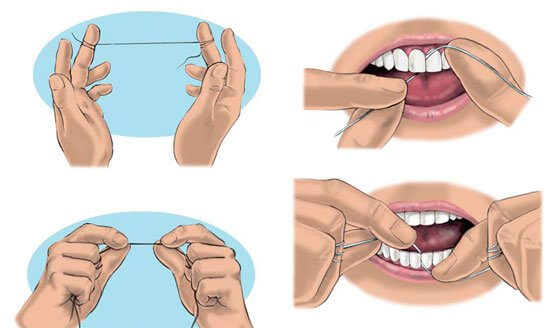

Hilo dental
A pesar de que existen dudas acerca de los beneficios de los beneficios de la limpieza entre los dientes, usar un limpiador interdental (como el hilo dental) es una parte esencial de cuidar sus dientes y encías.
La asociación Dental Americana recomienda limpiar entre los dientes una vez al día. Limpiar entre los dientes ayuda a remover una película adhesiva llamada placa. La placa contiene bacterias que se alimentan de los restos de comida o azúcar en tu boca. Cuando esto pasa, estas liberan un ácido que puede consumir la capa externa de los dientes y causar caries.
La placa que no es removida por el cepillado y la limpieza entre dientes ocasionalmente suele endurecerse en una sustancia rugosa llamada sarro. El sarro se acumula a lo largo de las encías y puede causar enfermedades en las mismas. Una vez que el sarro se ha formado, solo un dentista puede removerlo.
Como usar hilo dental
El hilo dental es delgado, suave. Si encuentras difícil el usar hilo dental, puedes intentar con cinta dental, la cual es más gruesa.
No sea muy agresivo con el hilo dental: se corre el riesgo de dañar las encías. La acción principal del hilo dental es un raspado firme pero suave del diente desde arriba hacia abajo.
Su dentista puede aconsejar el uso de hilo dental.
Tips para el uso de hilo dental
- Corta cerca de 45 centímetros de hilo dental, y dale unas cuantas vueltas alrededor de un dedo de cada mano
- Sujeta el hilo firmemente entre los pulgares e índices, con aproximadamente una pulgada de hilo entre ellos, sin dejar flojedad
- Realiza un suave movimiento “oscilante” para guiar el hilo dental entre tus dientes. No encajes el hilo dental en las encías
- Cuando el hilo dental alcance la línea de la encía, haz una curva en forma de C contra un diente hasta que sienta resistencia
- Sostén el hilo dental contra el diente. Raspa suavemente el lado del diente, alejando el hilo dental de la encía. Repite por el otro lado, a lo largo del lado del diente siguiente
- No olvides la parte posterior del diente
- Cuando uses hilo dental, mantén un patrón regular. Comienza en la parte superior y trabaja de izquierda a derecha, luego muévete a la parte inferior y de igual manera trabaja de izquierda a derecha. De esta manera es menos probables que evites algún diente
Se gentil
Una técnica pobre con hilo dental puede resultar en complicaciones, es importante ser minucioso pero gentil, especialmente cuando se usa un hilo dental eléctrico. Asegúrate de entender cómo usarlo. Siempre puedes pedir a tu dentista que te muestre el uso correcto si no estás seguro.

Si usted ha perdido uno o más dientes, los implantes dentales son una excelente opción de tratamiento. La pérdida de dientes puede ocurrir por una variedad de razones como:
Dental implant is a prosthetic replacement for a missing tooth. Natural teeth consist of the crow and the root. The crown and the root. The crow is the visible section that is covered with white enamel. Supporting the crown is the tooth rot which extends into the jawbone. The root is the part of the tooth that is effectively replaced by an implant.

A dental implant is a prosthetic replacements for a missing tooth. Osseointegrated implants can be used to support prosthetic tooth replacements of various designs and functionality and are usually made to match the natural enamel color of each patient – which offers a completely natural appearance and whole new smile.